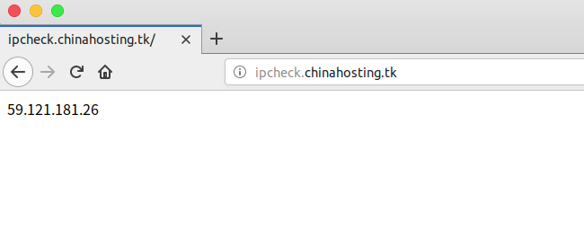
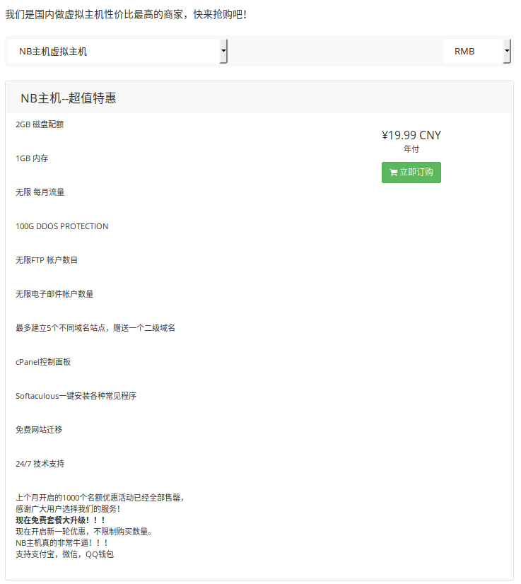
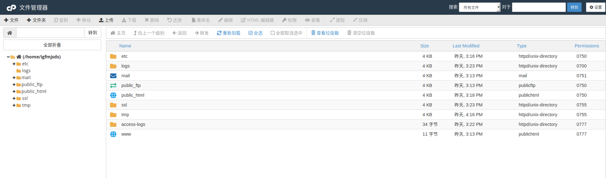
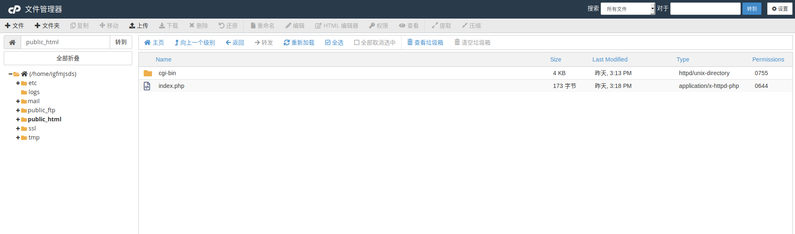

经常写爬虫的小伙伴们肯定有自己的代理IP池，我们在验证代理IP是否有效时，往往是利用
response=requests.get(ipcheck_url,proxies=proxy)这样的方法去验证，通过访问ipcheck_url，response能返回当前访客的ip地址，通过和代理ip对比一下，若一样，则代理ip有效，若response中的ip和你的电脑ip相同，则代理无效。ipcheck_url我们常常是选择的例如站长工具等之类的工具，这类工具往往访问量大，随时可能会出问题，这篇文章教你自己搭建一个验证有效性的这样一个平台，永不掉线，成本为一年20RMB，具体搭建耗时约在15分钟内。
先放一张效果图：

我个人搭建的服务在http://ipcheck.chinahosting.tk，我搭建的这个仅供大家测试使用，不一定什么时候会关掉呢，大家想要用的还是自己搭建一个吧。
购买主机
进入https://nbhost.cn
选择这个套餐：

然后就是一套购买流程了。 介绍一下，这个主机我已经用了一年多了，便宜实惠！
进入Cpanel面板
进入文件管理器

新建一个文件,命名为index.php

写入代码
1 |
|
访问你的域名即可
搭建出来的服务并发行极强，大家可以自行测试，可以用我搭建的测试下，个人用应该完全没问题的。